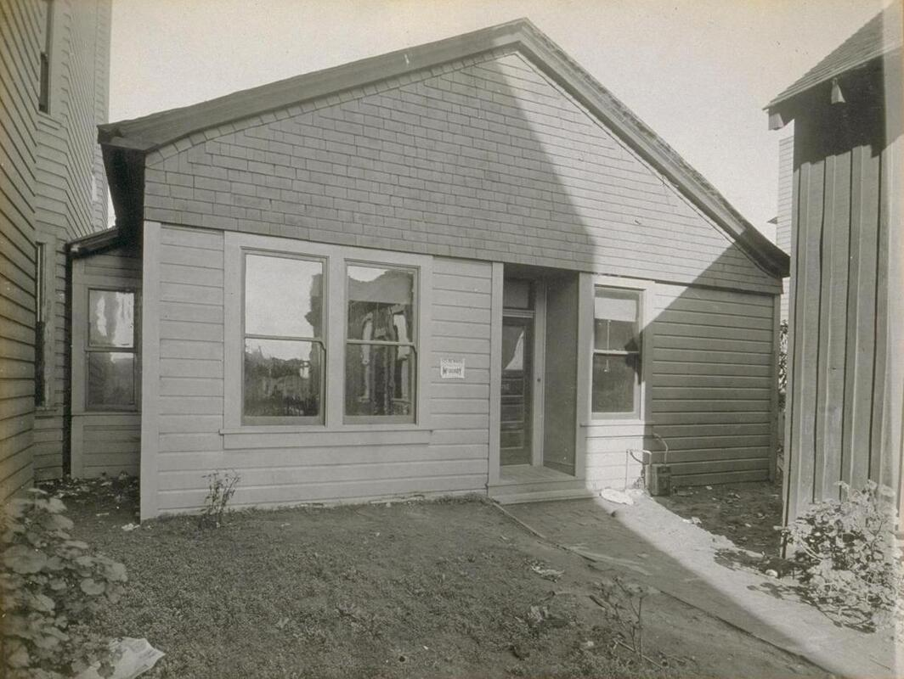
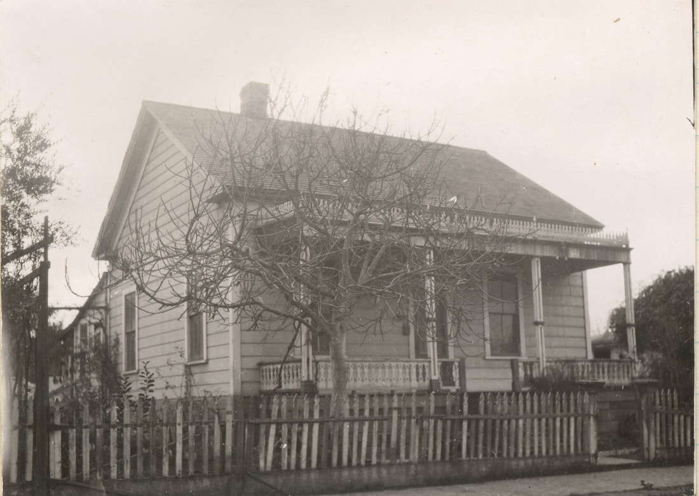
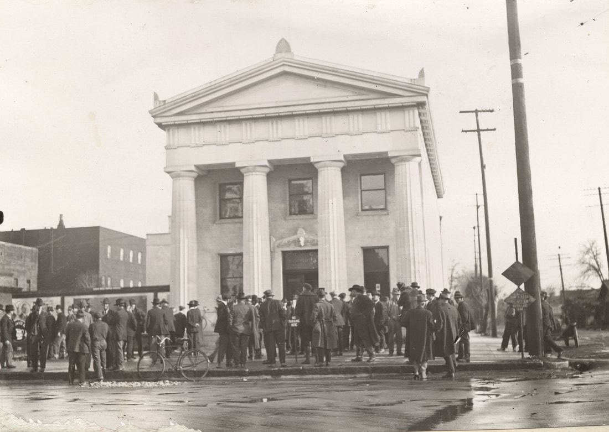
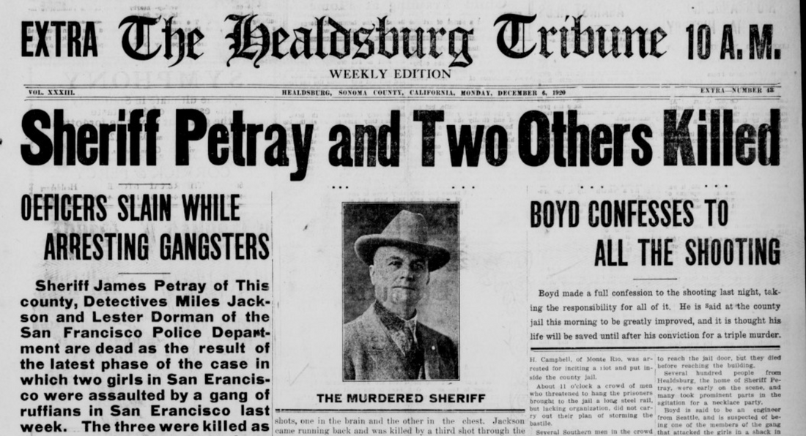
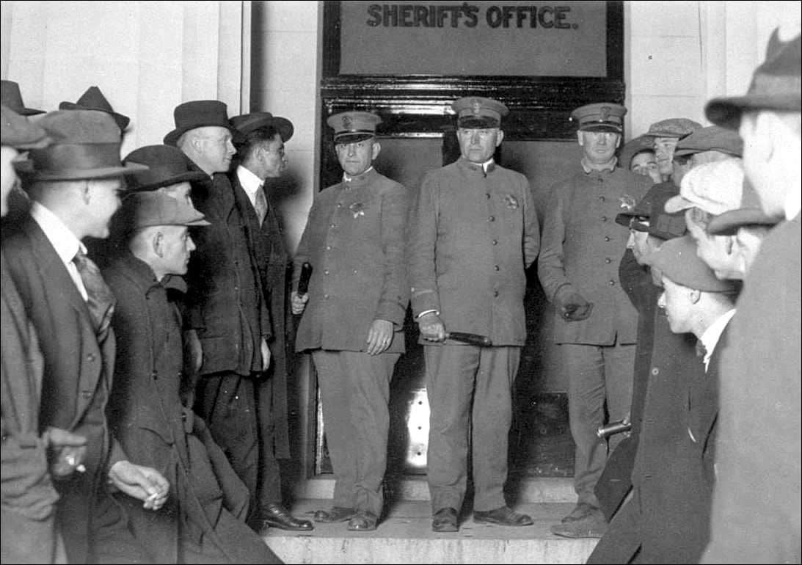
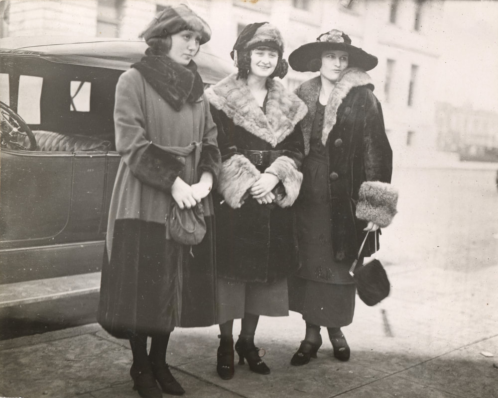
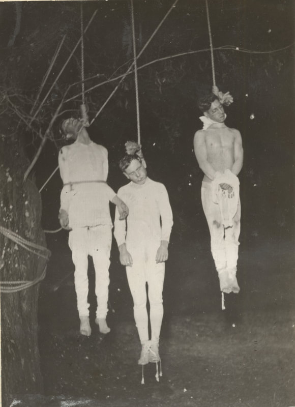
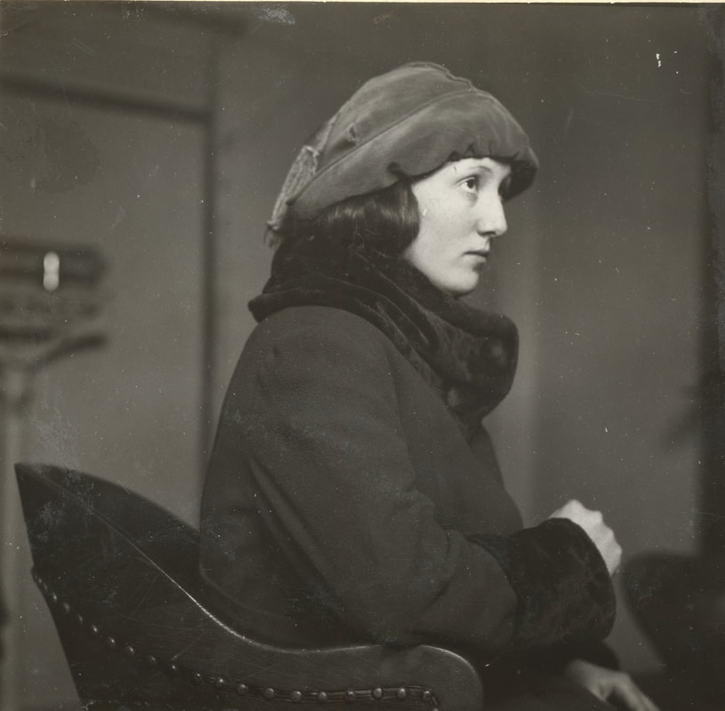
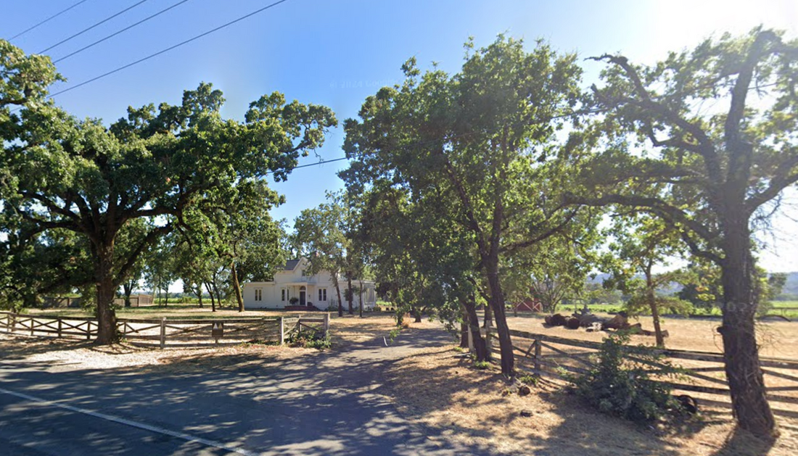

The Town that Kept a Secret
James Petray, Fred Young,
and the Last Lynching in Sonoma County
© 2025 Hannah Clayborn All Rights Reserved
|
Born in Healdsburg a generation apart, Fred Young and James Petray would become lead characters in a grisly, feverish spectacle in the early hours of Friday, December 10, 1920--the last lynching in Sonoma County.(1) A murder like that, in California, in the 20th century, is shocking. More shocking is the fact that the good citizens of Healdsburg and Sonoma County protected the identity of the perpetrators of this remorseless crime with a uniform silence that is difficult to fathom in our age of tell-all, show-all media. The identity of the masked leader of that well choreographed, premeditated lynching, Fred Young, was known to many at the time, including the press and law enforcement, but his name never appeared in print, nor was it publicly acknowledged in any way.
A relative of one of the principals told me the story in 1992, during a formal oral history interview in the offices of the Healdsburg Museum. He was 18 years old at the time of the 1920 lynching and he requested anonymity in his lifetime. I am reluctant to reveal his name even long after his death. At least three other independent sources have corroborated his testimony. Fred Young and James Petray were both sons of early Sonoma County settlers. With the advantage of hindsight there were other similarities between them and the three lynching victims, including criminal episodes in their youth. As with all real-life dramas that involve many characters, true demons or saints are hard to find. In careful retrospect, the memorial halos long surrounding Sheriff "Sunny Jim" Petray and hometown hero Fred Young have tarnished; the "gangsters" who were demonized and lynched on an old locust tree branch in 1920 have at least shed their horns and cloven hooves.  Where it all started: site of the alleged rape at 1256 1/2 Howard Street in San Francisco's South of Market neighborhood. (Bancroft Library, UC Berkeley)
Criminal Conspiracy or Screw Up?
What most people know of this incident is reminiscent of a James Cagney gangster film. On Monday December 6, 1920, the Healdsburg Tribune was apoplectic to report the death of popular Healdsburg homeboy, Sheriff "Sunny Jim" Petray, and two other San Francisco detectives, Sargeant Miles Jackson and Lester Dorman, by a group of Bay Area gangsters the day before. Three ruffians, George Boyd, Charles Valento, and Terrence (Terry) Fitts, hung out South of Market in San Francisco. They were sought for the alleged rape of three girls in a small house at 1256 1/2 Howard Street on the night before Thanksgiving. The suspects were tracked by sources to an Italian hotel in West Santa Rosa. A posse including the detectives named and Policewoman Katherine O’Connor could not find the alleged criminals one Saturday night after searching several local night spots. The group finally ended up at the Guidotti Hotel (now Stark’s restaurant) at 521 Adams St., near the Santa Rosa train depot. The sheriff and detectives returned to that same hotel midday on Sunday, accompanied not only by Policewoman O’Connor and Santa Rosa Chief of Police George Matthews, but by the three alleged rape victims: Pearl Hanley, Jessie Montgomery, and Edna Fullmer. Brought along to identify the suspects, the girls and law enforcement enjoyed a light-hearted lunch at the hotel at noon, untroubled by their approaching fate. 
Guidotti Hotel (now Spark's Restaurant) site of the carefree lunch with the doomed detectives. (Sonoma County Library)
Who Fired First?
After lunch Sheriff Petray took some of the officers to the Toscano Hotel, where they learned that the suspects had been there that very day. A bystander informed the posse that he had seen a little black fellow go into Pete Guidotti’s house, at 28 West Seventh St., adjoining the Guidotti Hotel. While Detectives Marvin Robinson and Robert Dickson snuck around to guard the back door, Sheriff Petray and Detectives Jackson and Dorman stepped into the combination living and dining room of the small Guidotti residence through the front door, ready to confront the fugitives. That confrontation was not an immediate Bonnie and Clyde shoot out. With the exception of Sheriff Petray, these men shared a history, and for at least 10 minutes they conversed, perhaps even negotiated. One report stated that Detective Miles Jackson recognized Valento as an ex-con who had wounded him during an arrest eight years before. Jackson was instrumental in sending Valento to prison. Valento claimed that he was once again being set up by Jackson. But it was alleged gangster George Boyd who reportedly rose from a dining room table (or a couch) unexpectedly at about 2:20 p.m. when Sheriff Petray made moves to arrest all three. Although initial accounts and the order of victims differ drastically from later ones, the consensus was that suspect Boyd fired the gun that killed all three lawmen. Sheriff Petray was shot twice, with a bullet to the stomach and brain, Detective Dorman with a bullet that hit his shoulder but lodged in his chest, and Detective Jackson with a shot through the lungs as he stood in the kitchen doorway. The crucial testimonial discrepancy is who fired first. According to one version, Boyd first shot Detective Jackson, who then managed to get off a shot before he fell, which hit suspect Boyd in his right side. Boyd’s testimony claimed that Jackson fired the first shot, wounding him in the side, whereupon he then fired on all three lawmen until he had no more bullets. Later evidence indicated there were two bullets fired from Jackson’s gun. Boyd’s gun was empty. Upon hearing the gunfire, Detectives Robinson and Dickson broke through the back door to confront the now unarmed Boyd, Valento, and Fitts in the kitchen and cuffed them. One early account has a suspect escaping through the front door and remaining at large, but that is not repeated in later reports. Suspects Fitts, Valento, and a wounded Boyd, along with Valento’s girlfriend, Dorothy Quinlan, were taken to the County jail at Courthouse Square in Santa Rosa.  Guidotti House at 28 West Seventh St. in Santa Rosa, site of the shootout on Sunday afternoon, December 5, 1920. (California State Library)
The Hospital, Jail, and Morgue
Sheriff Petray never regained consciousness, but was carried alive to a car by Detective Robinson and Dan Fitz Gerald, a local who had entered the house some time before the encounter. According to the attending physician Dr. G. W. Mallory at Mary Jesse hospital, Sheriff Petray died moments later on his operating table. Another car carried the other detectives, Jackson and Dorman. Jackson was pronounced dead on arrival and Dorman lingered until late that night. One of Petray’s brothers, finding the sherrif's remains removed from the hospital to the morgue, fell to his knees, sobbing out, Oh, brother, my brother, over and over. The Sheriff’s oldest son, Ransome, entering the jail to meet his father at 5 p.m. as he usually did on Sundays, was surprised by the mob who informed him about his father’s murder. Other members of the very large Petray family also arrived at the jail. Dr. Jackson Temple treated gangster Boyd’s wounds in his cell. Police officials took testimony from the surviving detective and suspect Boyd Sunday night. George Boyd allegedly testified at one point that Dan Fitz Gerald was the actual shooter, and that he himself was highly intoxicated. The police accused him of lying and would not disclose what he said to several representatives of the press who were initially allowed in. Local man Daniel H. Fitz Gerald, (son of Commodore John J. Fitz Gerald of Santa Rosa who organized and for many years directed the Poultry Association and Egg Exchange), and Pete Guidotti, who owned the house, were detained, questioned, and later released. On Monday suspect George Boyd was recovering with a wound in his right side and was expected to live to stand trial, although he was never moved from the jail for treatment.(2)  Residual crowds around the Sonoma County Courthouse jail, Courthouse Square, Santa Rosa, 1920 (California State Library)
Sea of Snarls
News of the killings traveled fast in Santa Rosa, at the time a small town of 8,758 people. Angry crowds, estimated as high as 2,500, already seethed around the jail by Sunday evening. Talk of lynching dropped from angry lips, including several hundred from Healdsburg who took prominent parts in the agitation for a necklace party. Men with two-by-fours made a run for the jail door about 9 p.m. Their leader, R. H. Campbell of Monte Rio, was arrested and jailed. About two hours later another mob, carrying a long steel rail, fell into disarray due to a lack of coordination. A Southerner from Georgia berated the crowd for their lack of know-how, claiming that in his home state the men would already be hanging from telegraph poles. It took a combined force of deputy sheriffs and city police to safeguard the prisoners. At midnight on Sunday a fire company engine came with their hoses, ready to cool the crowd. Santa Rosa’s mayor closed all of the saloons immediately after word of the tragedy, no doubt hoping to curb the enthusiasm of a lynch-minded mob. District Attorney George W. Hoyle is credited with taking all statements and gave the following report to the still turbulent crowd at 1 a.m. on Monday. His version of events differed substantially from earlier reports. From the best information available I believe that Sergeant Dorman was the first man shot, while Sheriff Petray went down next. Sergeant Jackson had undoubtedly stepped from the room into the kitchen, either to call the officers on guard, or to get an opportunity from door or window to get his man. Hearing the cry from Sergeant Dorman, "Oh Miles." he must have turned and stepped to the door to receive the bullet which killed him, and as he fell, fired the shot which hit Boyd. As two chambers of his revolver were empty he must have fired two shots before he became unconscious. By this time word had spread as far as San Francisco. Reporters of the Associated Press, The Examiner. The Chronicle, The Call and The Bulletin arrived in rapid succession producing many repetitious and often inaccurate versions to their readers. Grief for the loss of Sheriff James A. Petray was swift, with eulogies extolling his bravery, and descriptions of his grieving widow and three fatherless children. Elected in 1918 to replace another slain sheriff, J.K. Smith, Petray was credited with an impressive ability to deter crime and criminals. One reported: Two years ago he was elected Sheriff of this county and the majority he received indicated his universal popularity. Tall and strong, straight as an Indian "Jim" Petray was an ideal peace officer by every test that could be applied.(3) Not one of the glowing eulogies mentioned any earlier association to crime or criminals.  Headline December 6, 1920
Changing Testimony
There is obviously conflicting testimony about who shot whom in the Guidotti living room on that Sunday afternoon. Local boy Dan Fitz Gerald, who claimed to have witnessed the entire event, accused Boyd of firing the fatal shots and had initially reported that Boyd used his last bullet to wound himself in the right side. Pete Guidotti, who owned the house, on the other hand, claimed that [Detective] Jackson shot Boyd first from the kitchen door. Both Mr. and Mrs. Guidotti confirmed they knew suspect Terrance (Terry) Fitts, who had entered their home with two strangers only minutes before the detectives arrived, asking for a cash loan. When the Guidottis refused, Fitts asked for soup. When the lawmen first entered, all remained calm according to the Guidottis, and one of the suspects requested that they be questioned in another location saying, Let’s have no argument in this lady’s house. District Attorney George W. Hoyle took down all statements, including from Fitts and Valento, who denied knowing anything about who fired the first shots due to smoke and confusion. Boyd claimed the trouble started because he was intoxicated. Several reports describe Terry Fitts acting erratically and drunk in the days leading up to the encounter, in one case threatening a taxi driver with a gun. Sheriff Petray obviously did not expect any trouble rounding up the suspects as he tipped off the Press Democrat reporters on Saturday that they would have a good story on Sunday afternoon when he apprehended the suspects as planned. Instead Sheriff Petray himself became the story.(4) Sheriff Petray’s widow stopped one attempt to lynch the suspects when she entreated one rabble rouser over the telephone on Sunday evening: No, no; two wrongs cannot make a right, I don’t want you to do such a thing. From this point on the three suspects are identified in print as gangsters and degenerates and Sheriff Petray as a martyr. Alleged murderer George Boyd’s condition was worsening, with doctors fearing peritonitis. His wounds were described thus: The bullet which entered the right side of the lower chest ranged downward and backward, apparently having struck a rib, which diverted its course. It was located low down in the back just under the skin, and was removed yesterday… Finally, late Monday, we learn that the seriously wounded George Boyd under the rigorous cross-examination of District Attorney George Hoyle and Sheriff John M. Boyes,…broke down and confessed that it was he who shot the three officers. We can only speculate now about how rigorous that cross examination was. His confession is paraphrased by the newspaper as follows: When the three officers entered the Guidotti house he and his friends were sitting on a couch in the dining room, talking. The officers, after interviewing the men for perhaps ten minutes and searching them, expressed an intention of arresting all three. This was after Dorman had told Valento he “wanted” him and Valento had expressed willingness to go. Miles Jackson told to “get up,” and as he did so, according to the story, Fitts’s .44 calibre revolver, which had been secreted under a pillow on the couch, fell to the floor. Boyd stopped to pick it up, he declared, and Jackson commanded: “Drop that gun.” Instead of doing so, however, Boyd declared that he held onto it and that Jackson then “plugged” him. He then fired back, killing or fatally wounding all the officers. The press noted that local Dan Fitz Gerald gave a an entirely new version of events on Monday. He previously testified that Boyd rose from a dining room table to shoot when Sheriff Petray gave the arrest order, and used his last bullet to wound himself. On Monday, while theatrically dramatizing events for reporters in the Guidotti home, scene of the crime, his version more closely resembled Boyd’s final account, possibly given under duress: Fitz Gerald declared that the three fugitives were sitting on the couch talking and that he was sitting in a chair. When Guidotti led the officers into the rooms…the officers talked with the three men about ten minutes regarding their identity, and then Jackson, who was standing in the kitchen door, remarked, “Let’s take all three.” Other fragmentary reports of the incident have it that the ten-minute talk prior to the shooting included a heated argument between Detective Jackson and suspect Boyd, who accused the officer of having sent him to prison when he was an innocent man.(5) By this point newspaper reporters began arguing furiously for the later Fitz Gerald version. The testimony of Detective Lester Dorman as he lay dying at Mary Jesse hospital was taken on Sunday by Assistant District Attorney Ross Campbell, but it was not summarized by the newspapers who declared, it contains some statements shown by other testimony not to be correct.(6) I wonder now what that testimony was, and if it was suppressed because it contradicted the final, official District Attorney’s version. Unfortunately Detective Dorman did not live to retell it. On Thursday, December 9, all three suspects were charged by a grand jury before Judge Emmett Seawell, with formal indictments to follow the next day. District Attorney Hoyle announced …Boyd has confessed all.  Crowd & Police Sonoma County Jail, Santa Rosa, December 6, 1920 (California State Library)
The Original Crime Questioned
Along with Boyd’s full murder confession on Monday, he allegedly also confessed to being one of the men who raped Jessie Montgomery and Jean Stanley in the little house on Howard Street in San Francisco on November 24th, the original crime for which the men were sought. Pearl Hanley, who claimed to have been present when the other girls were attacked, identified George Boyd as her attacker at the jail, crying, He choked me. The same reporter claimed that Boyd also admitted that he served two previous terms in San Quentin for grand larceny and burglary under other names, having been released on August 23. A number of alleged gang members and criminals, including five men reported to have been involved in the attack on the women in the house on Howard Street, were rounded up previously in San Francisco. They were small-time boxers, including K. O. Kruvoski and Spud Murphy. Although the newspapers constantly refer to that house as a "shack" and gangster hideout, the house at 1256 1/2 Howard Street was simply a small infill squeezed between two older structures, used as an illegal liquor outlet. The crowd that frequented it included petty criminals and local boxers, who at that time were associated with criminal activity and bootlegging. In the feverish mood right after the Sunday afternoon killings, few probably paid attention to a small article in the press that cast doubt on that primary allegation of rape by Jessie Montgomery. Montgomery turned out to be Mrs. Arthur William Matthias, wife of a Petaluma automobile mechanic. Matthias and Jessie, then 16, had eloped the previous February from Petaluma where Jessie’s father was a Captain in the Salvation Army. Matthias claimed Jessie left him after he accused her of too close intimacy with prize fighters who were training in Petaluma and that she went willingly to San Francisco with boxer Kruvosky. Matthias appeared at the Sonoma County jail Sunday night demanding to see his wife, but was denied admission because it was feared he would make trouble.(7) Would that trouble include undermining the reason for the suspects’ arrests in the first place, that ever more shaky accusation of rape? The funeral of Sheriff James A. Petray, held Tuesday December 7 at St. Paul’s Episcopal Church, reportedly drew 3,000 mourners, with internment at Oak Mound Cemetery in Healdsburg.(8) He left a widow, Harriette (Hattie) May Parker Petray, son Ransome Parker Petray, age 16, James Homer Petray, age 15, and Margaret Lucile Petray, age 10. Margaret would marry a Stockton doctor, Elbert Smith, in 1932. The Petray estate was later valued at less than $2,000 in promissory notes. After funeral costs were paid, Hattie and the children were awarded $20.83 a week for 3 years and 11 months.  Jessie Montgomery, Pearl Hanley, and Edna Fulmer pose demurely for reporters in Santa Rosa 1920 (California State Library)
The Lynching
On Friday morning, December 10, the few residents who had not attended some part of the lynching starting at midnight the night before or had already heard about it from their neighbors, read about it in the newspapers. A masked mob allegedly numbering 400, mostly from Healdsburg, and led by "Captain" Fred Young, managed to cut all telephone lines, overpower Sheriff John Boyes and his five deputies, and seize all three suspects in less than five minutes. It was estimated that about 100 men actually entered the jail. A ring of masked vigilantes guarded the prisoners, barring all others from entering. It seems the former Air Force Lieutenant Young was given a promotion for this pseudo-military operation, and judging from all accounts, conducted the entire operation in a precise, orderly, and well planned manner. Melodramatic accounts of the scene at the jail, with Sheriff Boyes and others pleading with the masked men to wait for the indictments while being held at gunpoint ring false like a bad soap opera. The Captain (or Commander) of the masked men is allowed to explain: We’re your friends...and we’re Petray's, too. We’re doing this so they’ll know better and won’t do to you what they did to Petray. Law enforcement certainly knew who these ringleaders were, and were complicit in concealing their identity even if they had not cooperated in any other way, which is doubtful. At least half of the Healdsburg vigilantes were described as armed with rifles and revolvers, one with an acetylene blow torch. George Boyd reportedly made no protest when he was finally located, lying on a cot, but he was only barely conscious. He would be unconscious by the time he was taken to the cemetery. Charles Valento, drawn from the muck of the tenements and vice, and Terrance Fitts, black sheep of a good family, did protest, weep, and beg for their lives as innocent men until gagged and bound by the mob. During the proceedings Fitts continued to plead, crying that he was innocent. "I didn't do it,” he wailed; “my heart and hands are white.” The mob threw Fitts to the floor...Valento was getting his nerve back, but Fitts was in extremis. The mob stuffed a towel into Fitts’ mouth. He spat it out. It was stuffed back. He was knocked down. Someone kicked him in the mouth to ram the towel tighter. Teeth were scattered about. Valento was gagged, too. As the mob passed through the outer room, the sheriff said of Boyd: "That fellow’s all in; he won’t give you any trouble.” The men, bundled in blankets, were put In separate cars. Fitts kept struggling. Valento, however, saw that the game was up with him and he faced death in the end laughing at his slayers, dramatizing himself after the manner of his kind and playing the bad man of the movie melodrama. Cars were arranged to shine their headlights on an old black locust tree on the border of the Santa Rosa Rural cemetery. These lights were left to shine on the dangling bodies in the rain, spaced out in a row on previously strung ropes. In place of the indictments that had been scheduled for Saturday, December 11th, a coroner’s jury quickly exonerated all of the police officers involved at the jail with no further investigation, relying only on their testimony. All were judged blameless by Judge Emmet Seawell. Marvin "Butch" Robinson, one of the surviving deputy sheriffs from the Guidotti House shootout, performed some testimonial gymnastics to make all three suspects worthy of lynching. According to his convoluted account at the inquest, Boyd fired the gun, that was owned by Fitts, using shells purchased by Valento. This was judged to be a clear conspiracy to murder the detectives. The jury also found that the lynch mob was made up of unknown persons. Case closed by Judge Emmet Seawell. The Healdsburg Tribune had no explanation for the fact that they were prepared to do a special morning edition, with 200 copies of the newspaper describing the lynching, all sold before noon on Friday, December 10. They and other members of the press were clearly tipped off. A photo of the three swinging bodies was posted in the Tribune's front window by 5 a.m., just a few hours after the lynching. Healdsburg. home of the late Sheriff James Petray, made a small hour holiday of the return of its delegation from the Santa Rosa lynching party early today. The Healdsburg lynchers, who like the others had discarded their black masks on the way home from the Santa Rosa cemetery, paraded around the Healdsburg plaza in their cars, while the townsfolk turned out to give them a greeting such as is customarily accorded to returning veterans. One woman publicly threw her arms around the neck of her husband and cried. “I’m prouder of you than if you’d gone to France and killed a hundred Germans!” The demonstration lasted an hour. Souvenirs of the lynching were at a premium in Santa Rosa today. The ropes used by the mob were untwisted and hundreds of little loops of the strands were worn as buttonnieres. Bits of wood and bark and leaves from the death tree were grabbed up and the tree began to dwindle under the demand for mementoes. Masks discarded by the disbanding mob were found for miles along the highways and these were highly prized.(9)  Lynching victims left to right: George Boyd, Terrence Fitts, Charles Valento, Bornemuller Photo, S.F. Chronicle (California State Library)
Terrance James Fitts, Santa Rosa Son
It all happened so fast that the faceless, demonic gangsters in the newspaper accounts were already in the ground, two in unmarked graves near the spot they were lynched, before people began realizing who they might have been, namely somebody’s son. Terry Fitts was the most surprising of the trio. A Santa Rosa boy born September 14, 1877, he had no apparent reason to become a jailbird. His father was a prominent businessman, Jonathan Perry Fitts, who owned a large home and lumber business on College Avenue adjoining the Southern Pacific tracks. His father repeatedly served as a board of election inspector and a juror, and was a prominent Mason. Fitts was a 20-year old teamster when he enlisted during the Spanish-American War in 1898. But by 1906, he was convicted for assault to commit robbery and sentenced to 14 years. His mother, Rosa McManus Fitts died while he was in San Quentin, May 2, 1910. Paroled in 1912, he was again convicted just two years later of burglary in the second degree and sentenced to 5 years in San Quentin. During this 1914 arrest he may have wounded one of the arresting officers, a Detective Miles Jackson. After earning in-prison violations he was deemed incorrigible and was transferred to Folsom Federal Penitentiary in October 1917. He was finally released February 24, 1920. Later that September Terry’s father, Jonathan, sold the family home and lumber business and on November 9, a little over a month after the sale, Jonathan died. Healdsburg physcian, Dr. W. S. Stone, who acted as surgeon at San Quentin for six years, ran into Fitts on Thursday December 2, while enroute to San Rafael. He reported that at Santa Rosa Terry Fitts and Charles Valento boarded the train for San Francisco. The men said they were going to San Francisco but would return to Santa Rosa in the evening. Stone asked Fitts how he had been getting along since he left the penitentiary and Fitts replied that he had fallen heir to some money and was getting along fine. Dr. Stone confided elsewhere that he knew Fitts well during his work at San Quentin, and that he had tried to advocate for him for the sake of his sisters. For the sake of his family I did everything in my power for Fitts. Time and again I tried to have him paroled, but just about the time a parole was in sight Fitts would batter some other prisoner over the head, attack a guard or something, and then Fitts would go into solitary confinement with all his good credits wiped off. Terry FItts’s two sisters, Mrs. Cecil Riley of Santa Rosa and Mrs. Henry Pyburn of San Francisco petitioned for the release of his body. They said he would be buried, but not in the family plot. The article described the deceased as the despair of a respectable family. He was buried in a place he had often played as a child, not five blocks from his family home.(10) Terry Fitts: the Making of a Jailbird
Charles Walter Valento
The body of "Spanish Charlie" Valento was taken to his 70 year-old grieving mother and father, Clarinda De Guerrero and Angelo Valento, who lived on Howard Street in San Francisco. This was the same neighborhood that hosted the alleged rapes that set all of these events in motion. Just 5’ 2" tall, Charlie was born in Alviso March 17, 1887. He moved to San Francisco’s South of Market neighborhood by the age of 15, when he was involved in a fight and stabbing, but he was not the assailant. His first conviction for grand larceny in 1908 brought a five-year sentence. He was discharged February 19, 1912. By November he was accused of burglarizing the neighborhood of valuables worth between $30,000 and $40,000, but there is no further arrest or conviction on record. It later came out that the "Howard Street Gang" hideout, site of the original alleged rape, was actually a speakeasy that belonged to Valento’s brother-in-law. According to one source: The owner of the building was real estate investor James O’Sullivan, who was the brother-in-law of Charles Valento…The building was rented to Allen McDonald who operated the speakeasy.(11) George Morrison Barron (Boyd)
George Barron had several aliases including George Boyd and Joseph Slavin. He was born August 2, 1887, in Sydney, Australia and his mother, Elizabeth Boyd Barron, still lived there. George arrived in the United States at the age of 16, landing in Port Townsend, Washington in 1904, bound for Seattle. Boyd declared he first met Terry Fitts when he came to Santa Rosa years before to visit his sister Mrs. Ed Riley, who was housekeeper for a Hart family that lived on Mendocino Avenue. Only three years later he was convicted of a robbery in Sacramento under the name Joseph Slavin, and was sentenced to 10 years in Folsom. He was paroled April 10, 1914. Less than one year later George, under his real name, was convicted of a San Francisco robbery, and was sentenced to eight years on February 10, 1915. Discharged on June 10, 1920, George met his violent end less than six months later. Barron was buried in an unmarked grave in the Moke section of the Odd Fellows Cemetery. The warden of Folsom Prison reportedly wired Elizabeth Barron in Sydney that her son had died, but did not convey the circumstances.(12) The One that Got Away
Although it was not widely publicized during the confusing accounts at the time, someone did escape the Guidotti home in Santa Rosa that fateful Sunday afternoon. The Healdsburg Tribune reported that all members of the alleged Howard Street gang had been rounded up with only one exception. According to San Francisco Chief of Detectives Matheson: The exception was “the little black fellow" to whom Boyd first laid the blame for shooting the officers. This man’s name is believed to be L. A. Zarus. The pun (Lazarus) was obviously wasted on the Healdsburg reporter. Five years later the paper reported the murder of Al Joseph, thug and gangster shot in Los Angeles by Farmer Page, the head of a gambling ring. Al Joseph was said to be with the suspects at the Guidotti home that night, and was first identified as the shooter by George Boyd. He was the little black fellow who had successfully given them the slip and avoided the necktie party at the Odd Fellows Cemetery.(13) Heartburn
Misgivings about the lynching surfaced almost immediately. Even before the lynching an editorial in the Press Democrat warned against Poisonous Sob Stuff voiced in defense of the jailed suspects. Yet two of the men were clearly innocent of the crime for which they were lynched. Repeated attempts by Sheriff Petray’s friends to build a memorial to him were met with quiet, stiff resistance. The first memorial project began about one year after the lynching, headed by the same Judge Emmett Seawell who presided over so many of the court proceedings during and after the lynching. Healdsburg department store owner Harold B. Rosenberg and Petaluma physician Thomas Maclay called for a Statue of the Goddess of Justice seated between two drinking fountains. Supporters had raised $2,400 for the project that was to be placed in the northeast corner of the Santa Rosa Courthouse lawn.(14) By August 1923 only the central figure had been constructed, but by November open hostility broke out between the Petray Memorial Committee, made up mostly of Healdsburg citizens, and some citizens of Santa Rosa. Although it is not specified, the opposition was accused of making a slur on the memory of the departed sheriff. At one open hearing there were a couple of favorable addresses, but most opposed the project. One claimed that it would recall a gruesome incident in the county’s history, the slaying of the sheriff and the subsequent lynching of the men responsible. Another Santa Rosa resident stated that if they wanted one so much they should rightly put the memorial in the Healdsburg Plaza.(15) Another year passed and a strongly worded Memorial Committee resolution expressing its determination to erect a statue of Justice apparently had little effect on the rising opposition. Once again Judge Emmett Seawell seemed to be justifying the lynchings: Some people see the viciousness and sordidness in things, but never the ideals or the beautiful phases. I would not for anything wound the feelings of people among whom I have lived most of my life, but after this matter was decided upon and the work started a few people worked themselves up to hysteria and I cannot but believe they adopted the wrong mental viewpoint. The women of the state were up in arms over the gangster outrages which preceded Sheriff Petray's death, and at the time he was shot it was recognized that he lost his life at the hands of men who had attacked that which womankind holds highest, virtue. Then, after the work was contracted for and started a few of our citizens saw red and raised vociferous objection, but to my knowledge they have never come forward with a suggestion for solving the problem.(16) Some kind of monument, probably the Goddess of Justice, was finally placed on the northeast corner of the courthouse lawn at Fourth and Hinton Streets. But it was removed in June 1932. At that time it was described as the center of controversy and objection for years, and it was replaced with a bronze plaque put up by the Santa Rosa Twenty-Thirty Club.(17) The black locust tree (oak, according to some) that served as an impromptu gallows became a Kodak spot for ghoulish tourists and locals who took pieces of the tree for souvenirs. It had been chosen for its one long, meandering branch, large enough to accommodate three nooses in a row. In June 1922 Mrs. F. C. Haight, president of the cemetery trustees had the blameless tree axed to the ground. She just had enough of "justice" and the continuing notoriety.(18) Rape Victim Recants
I wonder if anyone noticed, five long years after the killings and lynching, when one of the women who originally testified against Boyd, Valento, and Fitts as rapists, recanted her testimony. When she was 17 years old Jessie Montgomery gave the key accusations about that Thanksgiving Eve in 1920 at the little house on Howard Street in San Francisco. She not only implicated the three lynching victims, but identified other members of the so called Howard Street Gang, including boxers K. O. Kruvosky and Spud Murphy. Three of them were serving 50-year sentences in Folsom for the alleged rapes. She wrote a formal letter in 1925 to Stanislaus Riley, assistant district attorney at the time, who had prosecuted the case. In the letter Montgomery, now known as Mrs. W. P. Miller of Spokane, Washington, said she falsely testified against the men because she was afraid they might get her for giving false testimony against Boyd, Valento and Fitts, which led to the death of all three. The testimony of Jessie Montgomery and her friend Jean Stanley began to unravel only months after the lynchings. The two were overheard quarreling while they stayed in the home of Policewoman Katherine O’Conner. She and her husband Deputy Sheriff John J. O’Connor, chief county jailer, and their daughter, Mrs. Anita Larrieu, all signed affidavits attesting to Montgomery’s and Stanley's admission that they lied at the trials. When questioned by the family, Jean Stanley gave them a very different version of events on November 24, 1920. According to her account, Jessie had been dancing and drinking along with the others while pursuing boxer K. O. Kruvosky. Jessie and Kruvosky had gone together into the bathroom and when Jean tried to stop them, Kruvosky punched Jean. After Jessie willingly went with Kruvosky , the situation at the speakeasy had devolved into a sometimes violent drunken orgy. Stanley explained that her friend Jessie always claimed she was doped when she got into trouble. San Francisco Assistant District Attorney Henry Heidelberg resigned in February 2021 to protest the injustice arising from the admissions Jean Stanley made to him personally. Heidelberg's resignation followed several clashes with his superior, San Francisco District Attorney Brady, in which Heidelberg demanded the right to reveal his conversations with Stanley, which had convinced him that she and Jessie Montgomery had been lying throughout. These conversations corroborated the O’Connor and Larrieu affidavits. According to Heidelberg, Jean Stanley told him Jessie has lied and lied and lied during the trial…I’ve lied all through these trials, but did it to protect Jessie’s character. Yet the San Francisco Police Department prevailed and held on to their crucial witnesses in 1921 by rounding up Montgomery and Stanley once again, hiding them for a time in Los Angeles, and convincing them to reassert all of their former testimony. The district attorney’s office was elated today at the manner in which Miss Montgomery and Miss Stanley stood up under fire yesterday. Miss Montgomery was defiant and sure of herself as she denied conversations attributed to her. Miss Montgomery laughed frequently as she gave the lie to the affidavits.(19) Although Boyd, Fitts, and Valento may have played some role in the sordid soirée at the speakeasy on Thanksgiving Eve 1920, they would have been supporting characters at most.  Jessie Montgomery, who started all of the events of December 1920 in motion, recanted her original testimony five years later. (California State Library)
Sheriff "Sunny Jim" Petray
James Albert Petray was the third of eight children born to Ransom Alexander Petray (1831–1906), a native of Pope County, Arkansas. Ransom came to the California gold fields in 1854, then worked in retail and as a farmer near Windsor. At least one of his brothers, Columbus Boone Petray, joined him in Sonoma County. Ransom’s first wife bore him two children before she died. Ransom then married Nancy Jane Faught in February 1865, and the couple had six more children, James being the first born the following November. Two years later Ransom purchased the120-acre farm south of Healdsburg that would grow to 475 acres at its peak. The Petray family homestead still stands, known as "Windmill Farms" at 11971 Old Redwood Highway.(20) The large Petray family was well known and well thought of. One of James's older brothers, Henry Calvin, became principal of the Fourth Street School in Santa Rosa, and it seemed like James might be headed down that path when he attended San Jose Normal School in 1888.(21) But James had a hard time settling, first contracting typhoid in that same year, and then finding employment as a San Francisco street car conductor in 1891. By 1893 he had taken a position on a ranch in Stockton.(22) Fugitive from Justice Suddenly, in 1894, James Petray is accused of the murder of one of his neighbors, John Bachman, who died on Tuesday, March 13, from a beating he received about two weeks before. By all accounts Mr. Bachman, age 69, a Swiss immigrant who settled on the ranch about 1886, was a bright and genial man. Petray became a fugitive from justice, whereabouts unknown, for the next three and a half years! Newspaper accounts paint a picture of a classic Old West dispute between farmers and cattle ranchers. From the time the Bachmans settled next to the Petray ranch there had been bad blood. Herman Bachman, the slain man’s son, described the dispute between the neighbors and the fact that his father requested that the Petrays never come on his land. Yet periodically Petray cattle broke through Bachman’s fences, causing considerable damage. Herman himself went to Ransom Petray time and again attempting to get him to repair the fences, but he would neglect it. In desperation the Bachmans corralled some wandering Petray cattle and called in County Poundmaster Drake to impound the animals and demand payment from Ransom to repair the fences. A verbal altercation, quelled by the Poundmaster, had already occurred between John Bachman and Ransom Powell by the time James came upon the scene. The elder Bachman tried to stop the Petrays from retrieving their cattle, but only Ransom Petray's version included a club directed at him menacingly by Bachman. When the final affray occurred both the club and the Poundmaster were apparently gone. All accounts describe James Petray striking the first blow, slapping a weaponless Bachman for calling his father a liar. Then, while his father held back Bachman’s screaming wife so she could not aid her husband, James Petray beat the 69 year old man with his fists. The most Bachman could do was try to shield himself with his raised arms. He died two weeks later on March 13, and a coroner’s jury at a subsequent inquest rendered a decision that John Bachman died from the blows he received at the hands of James Petray: A warrant was at once sworn out for the arrest of James Petray, against whom a charge of murder was preferred, and since Sheriff Allen has had his deputies out looking for him, but his whereabouts are still a mystery. It is known that Petray decamped because he expected the death of Bachman to come and feared violence from the friends of the old man.(23) A week later the Tribune amended its account, stating that John Bachman had called for the Poundmaster to take the calves, but that the official had instead gone to Ransom Petray and informed him of his cattle being at the Bachman place and requested the owner of the strayed calves to go with him and take them away. This the poundmaster did through friendship and saved Mr. Petray extra trouble and expense.(24)  Petray Homestead, 11971 Old Redwood Highway, Healdsburg, boyhood home of James Petray.
Petrays Pack the Court for Jim
Over three and half years later, just before Christmas 1897, James Petray reappeared and turned himself in to the sheriff. By that time the charge against him was reduced to manslaughter rather than murder and his $5,000 bail was paid by his father and Harrison Finley, a wealthy farmer/rancher on Mark West Springs Rd.(25) In February 1898 the jury stayed out only minutes before acquitting the 32-year old. The courtroom was packed during all of the proceedings, with one major spectacle being the rapt attendance of about twenty young female Petray family members. From the time of the beating, it is clear that the Petray family held the upper hand with county officials. The fact that Poundmaster Drake first consulted Ransom Petray through friendship to save him extra trouble and expense when Mr. Bachman complained is one indication. Another is law enforcement’s failure to make any attempt to track James down during the three long years that he was a fugitive. The trial, held in February 1898, was a product of its time. Two prominent attorneys hired by the elder Petray to defend James grilled attending physician, Dr. J. R. Swisher, who had returned the initial cause of death as blows to the head. They called in another local doctor, Dr. C. W. Weaver, to refute Swisher’s opinion. Weaver’s medical opinion was that death was caused by meningitis…He could not say that death was caused by violence. He would rather say that death resulted from natural causes. The doctor stated that if the man, considering his delicate condition was struck a blow hard enough to cause meningitis he would think he would fall dead. He would not say as to if the blow struck Bachman was sufficient to cause meningitis. He thought that if Bachman had been out in the cold and wet and had become excited that might have caused meningitis.(26) Weaver’s ridiculous testimony satisfied the jury, along with a parade of prominent and wealthy character witnesses for James. These included J. R. Miller, owner of Miller and Hotchkiss Packing Company, Harrison Barnes, president of the Farmers and Mechanics Bank, and entrepreneur and banker Ransome Powell. Dr. Weaver, who refuted Dr. Swisher’s opinion at the inquest, would abandon medicine three years later to replace Barnes as president of the Farmers and Mechanic Bank. [Note: Victim John Bachman’s widow, Anna Marie, continued on the farm with her son, step-son Herman, and daughter-in-law Mary. The latter couple purchased another ranch on Bailhache Ave. in 1897 and had a son and daughter, Emile and Julia. Family members are buried in Oak Mound Cemetery.](27) Despite having been a fugitive from justice for over three years, James Petray was chosen Grand Marshal of the Healdsburg July Fourth parade in 1901. He then served a short stint as superintendent of the Oro Fino gold mine in Redding in 1902. Later that same year he married Harriette May Parker of Dry Creek Valley and the couple resided in San Francisco, where James co-operated a meat market.(28) James’s father, the imposing pioneer Ransom Alexander Petray, died in 1906. A year later we find James back in Healdsburg, working with O. J. LeBaron, trying to secure rights-of-way from Dry Creek farmers for the Northwestern Pacific Railroad. This branch was to have connected Healdsburg to the Albion lumber mills in Mendocino County. Despite much ado and effort, the railroad never materialized and Dry Creek farmers sued the company over the project. (See Iron Horse Comes to Healdsburg on this website). The regularly unemployed James advertised a bowling tournament to drum up customers for a "Palace of Recreation" in 1909.(29) Later the same year James’s wife Hattie cut him loose, divorcing him in October after only seven years of marriage. In 1910 James went into partnership with his brother Frank and former Olympic champion shot putter Ralph Rose, now an attorney. The Healdsburg Realty Company was to deal in property and insurance in their new office in the Kruse Building at 112 Matheson St.(30) Two years later James, still unable to stick in a profession, purchased the liquor license privilege at the Sotoyome Hotel on West St. (now Healdsburg Ave.) intending to operate a saloon.(31) But his career as bartender had faded away by May of 2014, when James was reported to be handling forced-sale real estate for a client in Sacramento.(32) 
Ransom Alexander Petray (1831-1906), James's influential father, as a young man.

At Long Last Sheriff
In November 2014, at the age of 49, James Albert Petray, after bouncing like a pinball between occupations for a quarter of a century, finally found his professional niche, riding on his personal popularity to get elected Constable of Mendocino Township.(33) Law enforcement is one profession where a reputation for violence might not detract, and things continued to look up for the new constable. A year later he was gifted with a brand new 1916 Overland automobile by Castle Bros. Fruit buyers. All he had to do was continue moonlighting as their representative, as he had passed checks for $200,000 worth of local prunes for the company in 1915. That same year he remembered the poor of Healdsburg, raising all of $30 to make their Christmas brighter. He made certain his good works were well publicized.(34) Being a constable must have paid well, for a little over a year later Petray was able to buy an automobile service station from R.W. Bruce on the Redwood Highway. The newspapers state that he gave the service station over to his niece Gladys to run. Only three months after that he had enough cash left over to purchase land in Sacramento, which he planned to plant to prunes.(35) By 1917 Petray was appointed Deputy Sheriff, and with the papers full of news of the European War, he was again made Grand Marshal of the hometown July Fourth Parade.(36) Later that year he was acquitted by a jury of his peers when charged with assault by Healdsburg farmer Charles Coffman.(37) When he ran for the office of County Sheriff in the election of 1918, Petray’s paid endorsements claimed he was an enlisted volunteer in the Spanish-American War, but I can find no record of any such enlistment. In this description he also serves in the Home Guard.(38) At some point Sheriff Petray reunited with his estranged family, but his marital status is unclear. The family moved from Healdsburg and settled in a home on B Street in Santa Rosa in July 1919.(39) In that same month a gala banquet was held in Petray’s honor in Santa Rosa, with notables from all corners of the County, as well as Senator Herbert Slater and Assemblyman Stevens. He was presented with a golden star, the emblem of his office.(40) At the time of his murder Sheriff "Sunny Jim" Petray was a very well connected and highly compensated law enforcement officer and politician who moonlighted in private business and appeared to have unexplained sources of income. Fred Young
In the 1980s I wrote a short, lighthearted article: The First Flying Machine in Healdsburg: The Amazing Flight—and Crash—of Fred Young. Early in the short-lived military career of aviator Fred Young, he went AWOL one weekend in 1919 after a scheduled air show in Tulare, and flew up to Healdsburg to impress his old pals back home. Unfortunately he destroyed the plane in the process. Not unlike the young James Petray, Fred Young got away with this impetuous "crime" without injury or consequences. At least a decade after writing that first article I became certain that only 18 months after that escapade Fred led a lynch mob that murdered three men, two of whom were innocent of the crimes they died for. In the same year that the town of Healdsburg was named, 1857, Fred’s grandfather, John L. Young, and great grandfather Peter Griest, arrived with a trunk full of carpentry tools and two years later opened a cabinet shop that sold furniture and coffins. Because of the high mortality rate in settlement-era California, coffin sales were brisk, and the business evolved into an undertaking and mortuary business as well. As a leading businessman, John Young served multiple terms on the Board of Trustees and as mayor. By the early 1870s John’s oldest son Thomas Griest Young joined his father at Young and Sons furniture and Coffins, a landmark on Matheson Street for decades.(41) Thomas (Fred's father) followed the patriarch into public life and in 1894 was elected Sonoma County Coroner and Public Administrator. But Thomas’s political life had already ended when he was arrested for embezzlement in 1901, charged with a shortage of $3,000 in his public accounts in his former administrator’s job. He pleaded guilty. Two months later Thomas sold his stock of furniture, coffins, and hearse to R. G. Cook, perhaps to pay off that debt, but the business itself survived.(42) Thomas’s son, Rufus Frederick Young, was just 12 at the time of this public embarrassment. High School Hero
In high school Fred was a noted athlete, winning the pole vault at the Sonoma/Mendocino County Field Day alongside classmate Eddie Beeson, who won the high jump. Beeson went on to be an Olympic champion. In 1908 Fred took home the top honors in pole vaulting at UC Berkeley, and in 1910 again at Stanford with a jump of 11 feet, 6 inches (the world record at the time was 12 feet 2 inches) Fred and Eddie took post graduate classes (known as the "commercial course") at the high school after they graduated in 1909, so they could keep bringing home prizes.(43) By the time his California pioneer grandfather, John Young, died in January 1910, young Fred had chosen to work in the fruit packing houses of Washington State and managed to win a fruit packing labor contract for A.J. Callaway Company in 1913.(44) Unemployed two years later Fred was put in charge of the Sonoma County Exhibit at the famous 1915 Panama-Pacific Exposition in San Francisco.(45) The next year found him obviously underemployed while making an ecstatic excursion with a friend the entire length of the Russian River in a canoe; acting as registration deputy for the general election, and riding in (or driving) a car that sideswiped a horse and buggy after midnight on Redwood Highway, north of Windsor, on a foggy November night.(46) Daring Aviator Young
When the seemingly aimless Fred first enlisted in the military medical corp in July 1917, it was his experience helping his father in the funeral and embalming business that enabled his immediate promotion to sergeant while stationed at the Presidio in San Francisco. After Cadet training at UC Berkeley, he jumped to the more exciting aviation division in San Diego. After taking his first flight. he reported back to his father: There isn’t anything to the flying—the landing is the hard part. Within two months his natural ability in mechanics and aviation was quickly recognized and he was commissioned a Lieutenant flight instructor, stationed at March Field near Riverside.(47) Without any prior notice, 29-year old Fred married San Francisco teacher, Edith Hazel Prouty, age 30, on December 21, 1918. During his short furlough the couple managed to visit both Fred’s family in Healdsburg and Hazel’s family in Ione, Amador County.(48) Fred was given a desk job as executive personnel adjutant in 1919 and it was later that summer that Fred left March Field bound for an authorized aviation exhibition in Tulare, and took an unauthorized jaunt to his home town. Fred had been promoted to post adjutant when his father, Thomas Griest Young, had a stroke and died in Healdsburg on December 29, 1919. Fred resigned his military commission on February 15, 1920, and headed home.(49) Fred had no practical financial choice but to keep the family mortuary and embalming business going. Having been spared the terrible mortality of World War I while honing his aerial acrobatic skills, death now became Fred’s new occupation in more ways than one. 
Leader of the Pack
When dashing, bad boy, former Lt. Fred Young organized his agitated friends and admirers in Healdsburg into a lynch mob on Thursday, December 9, 1920, they probably did not question the authority or judgement of their home town hero. Others have stated that Fred took up the task reluctantly, that it was thrust upon him, but my informant, who was 18 years old at the time, only remembered that Fred clearly organized and led the mob that successfully stormed the Santa Rosa jail. Fred was the leader, their Captain, the Commander, and in charge when Healdsburg citizens lynched one accused killer and two innocent men at about 1 a.m. on Friday, December 10, 1920. I have previously described misgivings and ambivalent feeling expressed by some Sonoma County residents following the last lynching in Sonoma County, but I can find no similar reaction in Healdsburg. Although virtually everyone at the time knew who led the mob, his name was not made public until I included it in an exhibit at the Healdsburg Museum, entitled The Untold Stories in February 1993. At that point my informant’s testimony had been corroborated by at least three other independent sources. Fred was already 31 when he led the lynch mob, and he continued running the family mortuary business under the name Fred Young and Company. Rather than suffering any blowback, he began to serve immediately thereafter as deputy county coroner, and was ever more popular and prosperous. Two years later Fred was overwhelmingly elected to the offices of County Coroner and Public Administrator that his own father, Thomas, had held a quarter century before. By that time he and Hazel had moved into a lovely new bungalow at 301 Powell Street.(50) During that campaign of 1926, it is striking to see the immense, unequivocal support that Fred had from his hometown: …as an alert, energetic, conscientious, courteous, likable young man; always hustling, yet never too busy to do a service for his friends; winning success in business and the respect of his home town because he devotes himself to anything he undertakes with the same persistency that in school and college days he devoted to winning honors on track and field He is one of the most courteous and considerate men of my acquaintance. Mr. Young has a pleasing personality and an excellent reputation for character in every way. One campaign rally in Healdsburg is described: Healdsburg tonight looked like 100 per cent Fred Young town when 2000 automobiles assembled for the Shrine band concert, almost every one of them proudly displaying a “Young for Coroner” stickers or banner. A candidate who can receive such support in his home town surely must have merit, for the old saying is that the prophet is without honor in his own city.(51) When Fred ran for reelection that same year, no one dared oppose him: Everyone knew Fred Young was going to be a candidate to succeed himself and they also knew that no one would oppose him unless it was someone who simply wanted to be a political suicide… P. S. —Since the above has been written opposition against Mr. Young looms from the direction of Petaluma and may the gods have mercy on this candidate’s political soul.(52) During his second run for office the Healdsburg Tribune even broke its own long-standing policy of neutrality in local races to endorse Fred …because of the exceptional record Fred Young has made in conducting his office.(53) Fred won by a large majority that year and in 1934 and 1938 as well. Fred was a busy man, holding leadership roles in multiple fraternal organizations: Sotoyome Lodge Free and Accepted Masons, Santa Rosa Chapter Royal Arch Masons, Santa Rosa Commandery No. 14 Knights Templar, Santa Rosa Consistory Ancient and Accepted Scottish Rite Masons, Aahmes Temple of the Mystic Shrine, Healdsburg Chapter Order of Eastern Star, Friendship Lodge Knights of Pythias, Healdsburg Lodge of Odd Fellows, Santa Rosa Lodge of Elks, Santa Rosa Parlor Native Sons, and was a charter member of Healdsburg Kiwanis Club the Chamber of Commerce, and Commander of the American Legion. In 1934 he was active in a county-wide Legion committee attempting to remove Communists from relief rolls in order to rid the community of red agitators.(54) In 1935 he was elected president of the Coroner’s Association of California.(55) In 1936 Fred purchased a half interest in the well known Welti Brothers Funeral Parlors in Santa Rosa.(56) 
Death Finds Fred Young
Just halfway through his fourth term as County Coroner and Public Administrator, in December 1940, Fred was forced to resign due to a heart condition that he had been battling for at least a year.(57) In September 1943 Adeline Mascherini, who had been Fred’s secretary and office manager for the last 19 years, and Ernest Frandsen, a funeral director in Oakland and Modesto, purchased interests in the mortuary business, now located at the building Fred had built at 24 Matheson St. At that time Fred was the fourth generation of the longest-running, family-owned business in Healdsburg, established in 1859.(58) One of the first funerals Ms. Mascherini, and Mr. Frandsen oversaw was that of Rufus Frederick Young, drawing hundreds from across the county, on Monday, November 1, 1943. News reports reveal that on the day of his death on October 29, Fred had returned from a trip to the family ranch in Alexander Valley. Throughout his life his favorite hobby had been hunting, fishing, and horseback riding, which he had not been able to do for the last three years.(59) Hazel Prouty Young, Fred’s widow, retained her husband’s interest in the mortuary until a year before her own death in 1973.(60) The Town that Hangs Strangers From the time that he returned to Healdsburg in February 1920, until his own demise in 1943, Fred Young literally dealt with death almost all of his waking hours: as an embalmer and undertaker in his own mortuary business and as County Coroner and Public Administrator of Estates. In his spare time Fred’s favorite pastime was hunting and fishing. And for all those years no one ever publicly revealed that he organized and led the last lynching in Sonoma County, a heinous crime that dispatched two innocent men, and one who never got a trial. Because of the silent complicity of so many Healdsburg and Sonoma County residents, his barely contested re-elections, and his ubiquitous fraternal and organizational dominance, I wondered if Fred had intimidated others, ruling by fear and enforcing silence as some leaders do. I find no evidence of that, only a man who emanated a charismatic cloud large enough to securely envelop his home town, if not the more critical citizens of Santa Rosa. But on December 10, 1920, Fred Young was indeed a killer. Sheriff Jim Petray was no saint. He clearly had unexplained income during the time he served as sheriff that allowed him to buy several properties. He beat a defenseless old man who later died with his bare hands in 1894, was a fugitive from law enforcement for three years, and was accused of assault again in 1917. Riding on the wave of Petray family influence and his own immense popularity, juries acquitted him both times. George Barron (aka Boyd), Charlie Valento, and Terry Fitts may have been gangsters and burglars and frequented speakeasies. But Charlie and Terry were not killers. I can't help but wonder if in later years Fred Young ever regretted his actions, ever had a change of heart before his own heart failed him. In 1979, soon after I started working as the curator at the Healdsburg Museum, I attended a social event in Santa Rosa at the Sonoma County Museum. One well known older Santa Rosa resident introduced himself, and when he heard where I was working, he smiled, and said, Well, be careful, Sweetheart. You know they hang strangers in Healdsburg. At the time I could only think that he meant they didn't appreciate outsiders such as myself. Now I know that he was dead serious. Endnotes
1. There are two more known lynchings in Northern California: November 26, 1933 in San Jose, and August 3, 1935 in Yreka. Ken Gonzales-Day, Lynching in the West: 1850-1935, 2006, Duke University Press, Appendix 1, p 227. 2. Healdsburg Tribune, Enterprise and Scimitar, Volume XXIII, Number 43, 6 December 1920 (1:1. Press Democrat, Volume XLVIII, Number 136, 6 December 1920 (1:1); Fitz Gerald: ancestry.com; Press Democrat, Volume 86, Number 238, 4 October 1942 (1). 3. Press Democrat, Volume XLVIII, Number 136, 6 December 1920 (1:1) (1:5) (2:6); Press Democrat, Volume XLVIII, Number 137, 8 December 1920 (5:4); Healdsburg Tribune, Enterprise and Scimitar, Volume XXIII, Number 43, 9 December 1920 (1:5). 4. Press Democrat, Volume XLVIII, Number 136, 6 December 1920 (1:5; 2:6. Healdsburg Tribune, Enterprise and Scimitar, Volume XXIII, Number 43, 9 December 1920 (1:5). 5. Press Democrat, Volume XLVIII, Number 136, 7 December 1920 (2:1). 6. Press Democrat, Volume XLVIII, Number 136, 7 December 1920 (1:1; 1:2; 1:6; 1:8; 2:1). Healdsburg Tribune, Enterprise and Scimitar, Volume XXIII, Number 43, 9 December 1920 (2:2). 7. Press Democrat, Volume XLVIII, Number 136, 7 December 1920 (!:2). 8. Press Democrat, Volume XLVIII, Number 136, 7 December 1920 1:2). Healdsburg Tribune, Enterprise and Scimitar, Volume XXIII, Number 43, 9 December 1920 (1:3; 2:3; 5:1; 5:2). 9. Press Democrat, Volume XLVIII, Number 139, 10 December 1920 (1:1; 1:6). San Francisco Call, Volume 108, Number 134, 10 December 1920 (10 &11); Healdsburg Tribune, Enterprise and Scimitar, Volume XXIII, Number 44, 16 December 1920 (3:1; 6:2; 6:5). Press Democrat, Volume XLVIII, Number 140, 11 December 1920 (1:6. Healdsburg Tribune, Enterprise and Scimitar, Volume XXXIII, Number 50, 27 January 1921 (2:4). Healdsburg Tribune, Enterprise and Scimitar, Volume XXXIV, Number 16, 7 July 1921 (1:5). 10. Terrance Joseph Fitts, Jonathan Perry Fitts, findagrave.com; Press Democrat, Volume XXX, Number 276, 20 November 1904 (8:2). Press Democrat, Volume XXXIX, Number 86, 12 April 1912 (3:3). Press Democrat, Volume XLVIII, Number 80, 1 October 1920 (8:2). Press Democrat, Volume XLVIII, Number 117, 13 November 1920 (3:3). Press Democrat, Volume XLVIII, Number 137, 8 December 1920 (5:4). San Francisco Call, Volume 108, Number 135, 11 December 1920 (2:3). ancestry.com: U.S. Military Registers 1858-192. California U.S. Prison and Correctional Records San Quentin p. 374; 394. Also Inmate Mug Books, p. 138, 169. 3. 11. Petaluma Daily Morning Courier 11 December 1920. Petaluma Argus-Courier, 13 December 1920 (6:5) http://santarosahistory.com/wordpress/2021/05/the-wolves-thanksgiving/ (footnote 3) ancestry.com Margarita Valento Hirschler, Howard St., San Francisco 1920 U.S. Census. 12. findagrave.com George Barron. ancestry.com: George Morrison Barron. U.S. Arriving and Departing Passenger and Crew Lists 1882-1965. U.S. Prisons and Corrections Mug Shots, Folsom p. 116, 152. Press Democrat, Volume XLVIII, Number 136, 7 December 1920 (1:5). Press Democrat, Volume XLVIII, Number 149, 22 December 1920 (6:1). 13. Press Democrat, Volume XLVIII, Number 136, 6 December 1920 (1:1; 1:5). Healdsburg Tribune, Enterprise and Scimitar, Volume XXIII, Number 43, 9 December 1920 (2:3, Healdsburg Tribune, Enterprise and Scimitar, Volume XXXVII, Number 48, 12 February 1925 (3:2). 14. Press Democrat, Volume XLVIII, Number 138, 9 December 1920 (4:1). Healdsburg Tribune, Enterprise and Scimitar, Volume XXXIV, Number 37, 1 December 1921 (1:3). Healdsburg Tribune, Enterprise and Scimitar, Volume XXXIV, Number 48, 16 February 1922 (1:5). Healdsburg Tribune, Enterprise and Scimitar, Volume LIV, Number 53, 30 June 1932 (6:2). 15. Healdsburg Tribune, Enterprise and Scimitar, Volume XXXXV, Number 20, 3 August 1922 (1:1). Healdsburg Tribune, Enterprise and Scimitar, Volume XXXXV, Number 36, 23 November 1922 (1:3). Healdsburg Tribune, Enterprise and Scimitar, Volume XXXXV, Number 37, 30 November 1922 (3:4). 16. Healdsburg Tribune, Enterprise and Scimitar, Volume XXXVI, Number 24, 30 August 1923 (1:3). 17. Healdsburg Tribune, Enterprise and Scimitar, Volume LIV, Number 53, 30 June 1932 (6:2). 18. Healdsburg Tribune, Enterprise and Scimitar, Volume XXXXV, Number 11, 1 June 1922 (1:3). 19. San Francisco Call, Volume 109, Number 29, 9 February 1921 (1:8). Press Democrat, Volume XLVIII, Number 191, 10 February 1921 (1:6). San Francisco Call, Volume 109, Number 32, 12 February 1921 (1&2). San Francisco Call, Volume 109, Number 35, 16 February 1921 (1:7). San Francisco Call, Volume 109, Number 36, 17 February 1921 (1:8). Press Democrat, Volume XLVIII, Number 199, 19 February 1921 (1:1). San Francisco Call, Volume 111, Number 55, 10 March 1922 (14:4). Healdsburg Tribune, Enterprise and Scimitar, Volume XXXVIII, Number 38, 10 December 1925 (1:5). 20. findagrave.com: Ransom Alexander Petray (1831—1906). https://inhabit.corcoran.com/a- fruitful-proposition/. Historical Atlas Map of Sonoma County California, Thos. H. Thompson, 1877, p. 38. 21. Healdsburg Tribune, Enterprise and Scimitar, Volume 1, Number 12, 6 June 1888 5:2. 22. Healdsburg Tribune, Enterprise and Scimitar, Volume 1, Number 28, 29 September 1888 (5:2). Healdsburg Tribune, Enterprise and Scimitar, Volume 8, Number 4, 15 October 1891 (3:3). Healdsburg Tribune, Enterprise and Scimitar, Volume 11, Number 13, 15 June 1893 (3:2). 23. Healdsburg Tribune, Enterprise and Scimitar, Volume 12, Number 52, 15 March 1894 (2:3). Healdsburg Tribune, Enterprise and Scimitar, Volume 13, Number 1, 22 March 1894 (2:3). 24. Healdsburg Tribune, Enterprise and Scimitar, Volume 13, Number 2, 29 March 1894 (3:4). 25. Healdsburg Tribune, Enterprise and Scimitar, Volume XX, Number 13, 23 December 1897 (3:2). 26. Press Democrat, Volume XLI, Number 43, 12 February 1898 (3:1) San Francisco Call, Volume 83, Number 74, 12 February 1898 (3:6 & 3:1). Healdsburg Tribune, Enterprise and Scimitar, Volume XX, Number 21, 17 February 1898 (5:2). 27. findagrave.com John, Herman, Emile Bachman Family, Oak Mound Cemetery, Sonoma County, California. 28. Healdsburg Tribune, Enterprise and Scimitar, Volume XXVI, Number 11, 20 June 1901 (1:5). Healdsburg Tribune, Enterprise and Scimitar, Volume XXVII, Number 25, 25 September 1902 (6:2). Healdsburg Tribune, Enterprise and Scimitar, Volume XXVII, Number 33, 20 November 1902 (2:1). 29. Healdsburg Tribune, Enterprise and Scimitar, Volume XVIII, Number 34, 15 November 1906 (1:1). Healdsburg Tribune, Enterprise and Scimitar, Volume XIX, Number 13, 20 June 1907 (1;5). Healdsburg Tribune, Enterprise and Scimitar, Volume XXI, Number 3, 16 April 1909 (2:4). 30. Healdsburg Tribune, Enterprise and Scimitar, Volume XXII, Number 46, 19 January 1910 (2:4). 31. Healdsburg Tribune, Enterprise and Scimitar, Volume XXV, Number 30, 3 October 1912 (1:3 & 4:3). 32. Healdsburg Tribune, Enterprise and Scimitar, Volume XXVII, Number 9, 7 May 1914 (3:1). 33. Healdsburg Tribune, Enterprise and Scimitar, Volume XXVII, Number 35, 12 November 1914 (6:4). 34. Healdsburg Tribune, Enterprise and Scimitar, Volume XXVIII, Number 38, 30 December 1915 (1:1). 35. Healdsburg Tribune, Enterprise and Scimitar, Volume XXIX, Number 48, 1 March 1917 (4:4). Healdsburg Tribune, Enterprise and Scimitar, Volume XXX, Number 12, 21 June 1917 (5:1). 36. Healdsburg Tribune, Enterprise and Scimitar, Volume XXX, Number 10, 7 June 1917 (5:1). 37. Healdsburg Tribune, Enterprise and Scimitar, Volume XXX, Number 27, 4 October 1917 (1:5). 38. Healdsburg Tribune, Enterprise and Scimitar, Volume XXXI, Number 22, 15 August 1918 (7:3). 39. Healdsburg Tribune, Enterprise and Scimitar, Volume XXXI, Number 34, 7 November 1918 (1:5). Healdsburg Tribune, Enterprise and Scimitar, Volume XXXII, Number 11, 12 June 1919 (1:5). 40. Healdsburg Tribune, Enterprise and Scimitar, Volume XXXII, Number 14, 3 July 1919 (1:2). 41. Reynolds and Proctor, Illustrated Atlas of Sonoma County, California, Reynolds and Proctor, 1898, p. 39. Healdsburg Tribune, Enterprise and Scimitar, Volume XXXII, Number 46, 1 January 1920 (5:4); Healdsburg Tribune, Enterprise and Scimitar, Number 41, 18 June 1964 (1:1); Healdsburg Tribune, Enterprise and Scimitar, Number 51, 17 August 1967. 42. Healdsburg Tribune, Enterprise and Scimitar, Volume XXVI, Number 37, 19 December 1901 (1:3); Healdsburg Tribune, Enterprise and Scimitar, Volume XXVI, Number 47, 27 February 1902 (8:2). 43. Healdsburg Tribune, Enterprise and Scimitar, Volume XIX, Number 33, 7 November 1907(1:4); Healdsburg Tribune, Enterprise and Scimitar, Volume XX, Number 3, 9 April 1908 (4:3); Healdsburg Tribune, Enterprise and Scimitar, Volume XX, Number 29, 8 October 1908 (1:2); Healdsburg Tribune, Enterprise and Scimitar, Volume XX, Number 33, 5 November 1908(8:3); Healdsburg Tribune, Enterprise and Scimitar, Volume XXI, Number 22, 27 August 1909 (1:4). Healdsburg Tribune, Enterprise and Scimitar, Volume XXIII, Number 4, 6 April 1910 (6:3); Healdsburg Tribune, Enterprise and Scimitar, Volume XXIII, Number 7, 27 April 1910 (2:4); Healdsburg Tribune, Enterprise and Scimitar, Volume XXIII, Number 11, 25 May 1910 (1:1). 44. Healdsburg Tribune, Enterprise and Scimitar, Volume XXV, Number 37, 21 November 1912 (5:2); Healdsburg Tribune, Enterprise and Scimitar, Volume XXVI, Number 22, 7 August 1913 (8:5). 45. Healdsburg Tribune, Enterprise and Scimitar, Volume XXVII, Number 48, 18 February 1915 (1:2). 46. Healdsburg Tribune, Enterprise and Scimitar, Volume XXIX, Number 11, 22 June 1916 (3:3); Healdsburg Tribune, Enterprise and Scimitar, Volume XXIX, Number 25, 28 September 1916 (1:3); Healdsburg Tribune, Enterprise and Scimitar, Volume XXIX, Number 30, 2 November 1916 (4:3). 47. Healdsburg Enterprise, Volume XLII, Number 32, 20 October 1917 (1:4); Healdsburg Tribune, Enterprise and Scimitar, Volume XXXI, Number 6, 2 May 1918 (7:1); Healdsburg Tribune, Enterprise and Scimitar, Volume XXXI, Number 17, 11 July 1918 (8:3). Healdsburg Tribune, Enterprise and Scimitar, Volume XXXII, Number 62, 12 February 1920 (1:2). 48. Healdsburg Enterprise, Volume XLII, Number 40, 21 December 1918(1:2); San Francisco Chronicle Sun, Dec 22, 1918 (6); Healdsburg Tribune, Enterprise and Scimitar, Volume XXXI, Number 42, 2 January 1919 (4:2); Ancestry.com. 49. Healdsburg Tribune, Enterprise and Scimitar, Volume XXXII, Number 46, 1 January 1920 (5:4); 1920 U.S. Census. Healdsburg Tribune, Enterprise and Scimitar, Volume XXXII, Number 62, 12 February 1920 (1:2). 50. Healdsburg Tribune, Enterprise and Scimitar, Volume XXXVII, Number 3, 3 April 1924 (4); Healdsburg Tribune, Number 60, 14 January 1926 (1:5). 51. Healdsburg Tribune, Number 60, 14 January 1926 (1:5); Sotoyome Scimitar, Volume XXVII, Number 92, 27 August 1926 (4:1); Healdsburg Tribune, Number 247, 28 August 1926 (6:2); Healdsburg Tribune, Number 248, 30 August 1926 (4:1). 52. Healdsburg Tribune, Enterprise and Scimitar, Volume LII, Number 51, 19 June 1930 (6:3). 53. Healdsburg Tribune, Enterprise and Scimitar, Volume LIII, Number 8, 21 August 1930 (2:1). 54. Healdsburg Tribune, Enterprise and Scimitar, Volume LXX, Number 9, 29 November 1934 (5:5). 55. Healdsburg Tribune, Enterprise and Scimitar, Volume LXX, Number 38, 20 June 1935 (1:6). 56. Healdsburg Tribune, Enterprise and Scimitar, Volume LXX, Number 38, 20 June 1935 (1:6). 57. Healdsburg Tribune, Enterprise and Scimitar, Volume LXXIV, Number 48, 5 May 1938 (1:6); Healdsburg Tribune, Enterprise and Scimitar, Volume LXXIX, Number 5, 5 November 1943 (1:3). 58. Healdsburg Tribune, Enterprise and Scimitar, Volume LXXIV, Number 82, 1 September 1938 (1:6). 59. Healdsburg Tribune, Enterprise and Scimitar, Volume LXXVI, Number 18, 2 December 1940(1:2). 60. Healdsburg Tribune, Enterprise and Scimitar, Volume LXXVIII, Number 48, 3 September 1943 (1:6). 61. Healdsburg Tribune, Enterprise and Scimitar, Volume LXXIX, Number 5, 5 November 1943 (1:3); Healdsburg Tribune, Enterprise and Scimitar, Volume LXXIX, Number 10, 10 December 1943(4:1). 62. Healdsburg Tribune, Enterprise and Scimitar, Number 5, 13 September 1973 (1:1). |